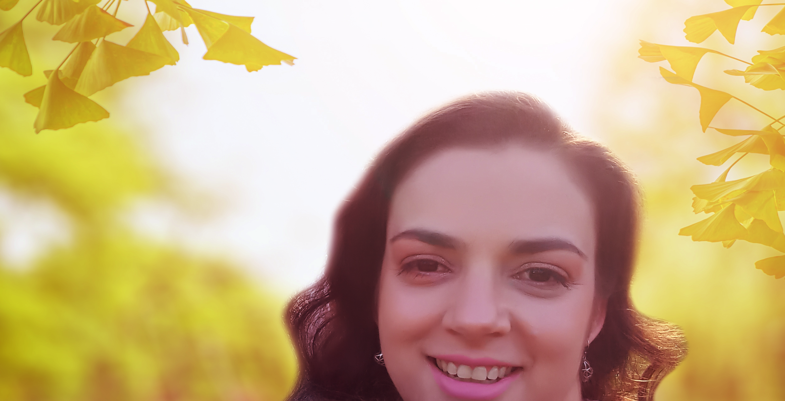

Olá,
Me chamo Denise.
Desenvolvedora de software Fullstack
"Acredito que, com a ajuda da tecnologia, somos capazes de transformar ideias em ações, criando soluções para um mundo melhor."

Quem sou eu
Sou apaixonada por tecnologia e inovação, estou em uma jornada para me tornar uma desenvolvedora de software fullstack e impactar positivamente a vida das pessoas. Para mim, esse é o verdadeiro propósito e é o que me motiva todos os dias.
Moro em Curitiba - Paraná e atualmente estou em uma transição de carreira, me dedicando ao curso de Tecnologia em Análise e Desenvolvimento de Sistemas.